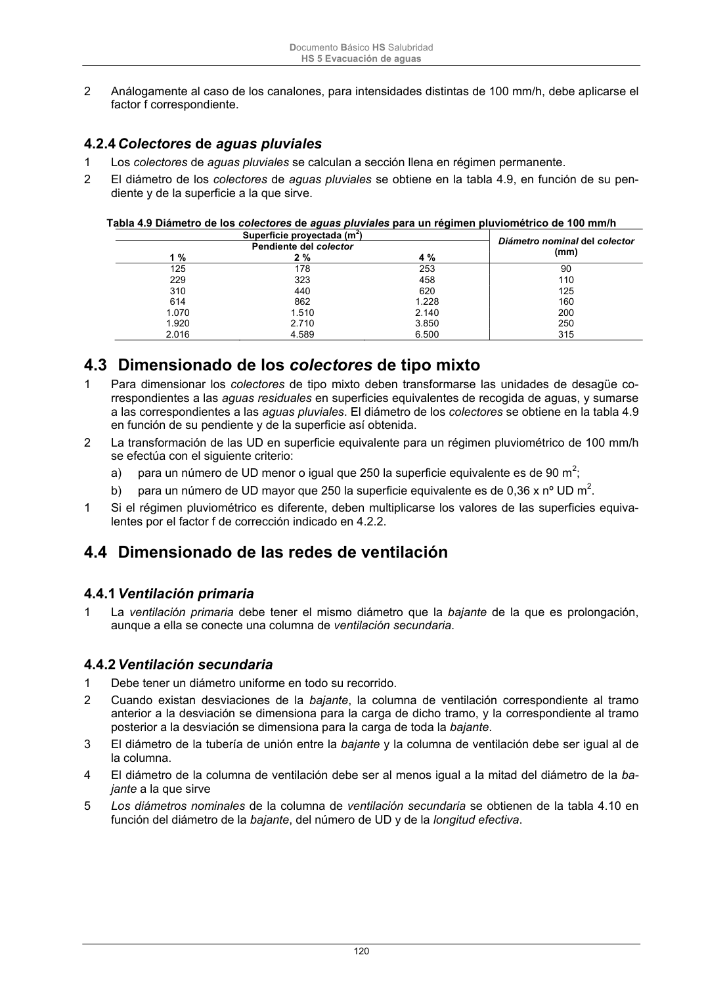

DB-HS · Fragmento de PDF p119 · versión 2022-06-14 · capa oficial
Formatos: JSON compacto · Markdown · PDF fuente
Ámbito del documento · texto del ámbito · documento y tablas
ID técnico a0266 · PDF pág. 119-120 · jerarquía no validada por persona · no es capítulo: sin_linea_de_encabezado · padre: raíz · literal original en el contenido: «4.2.3 Bajantes de aguas pluviales»
4.2.3 Bajantes de aguas pluviales 1 El diámetro correspondiente a la superficie, en proyección horizontal, servida por cada bajante de aguas pluviales se obtiene en la tabla 4.8: Tabla 4.8 Diámetro de las bajantes de aguas pluviales para un régimen pluviométrico de 100 mm/h Superficie en proyección horizontal servida (m 2) Diámetro nominal de labajante (mm) 65 50 113 63 177 75 318 90 580 110 805 125 1.544 160 2.700 200 Documento Básico HS Salubridad HS 5 Evacuación de aguas 120 2 Análogamente al caso de los canalones, para intensidades distintas de 100 mm/h, debe aplicarse el factor f correspondiente.

PDF fuente redistribuible: copia fiel enlazada en esta página (SHA256 verificado).